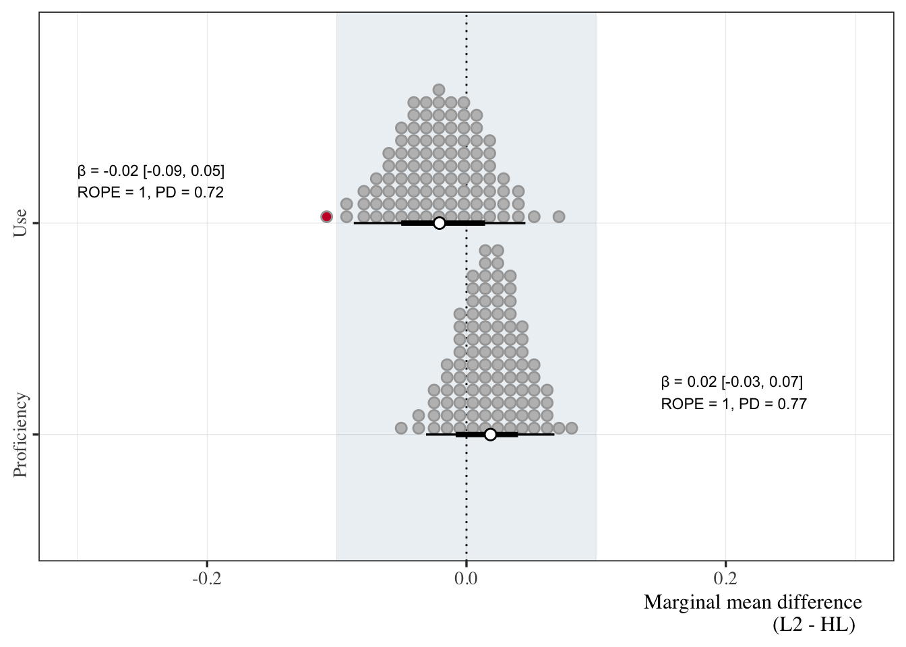
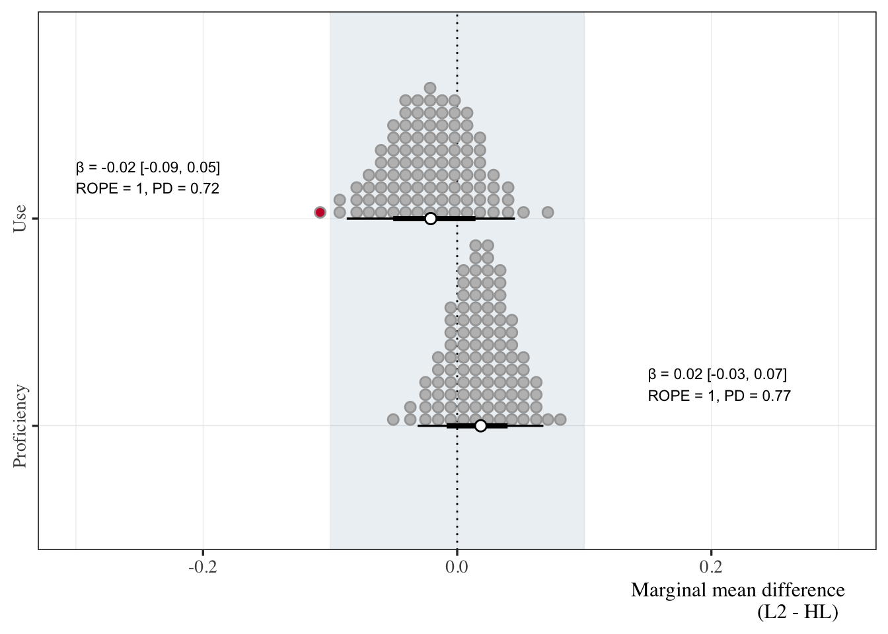
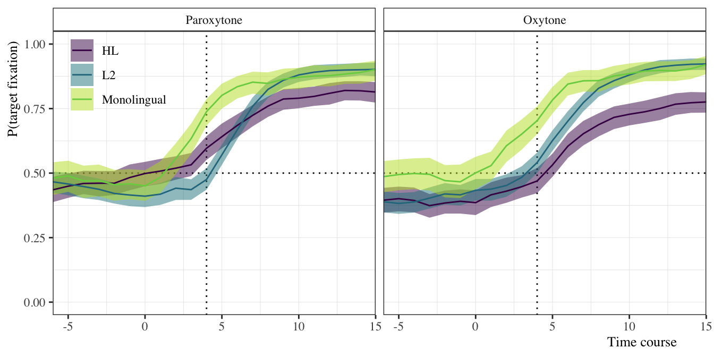
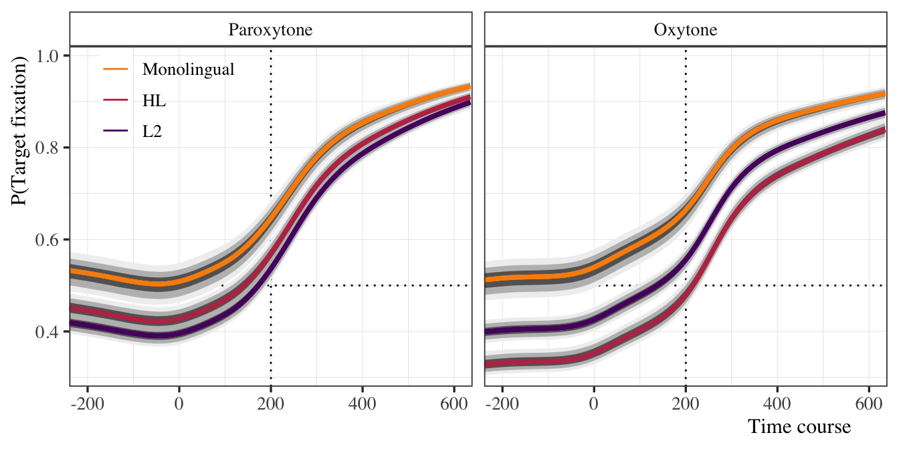
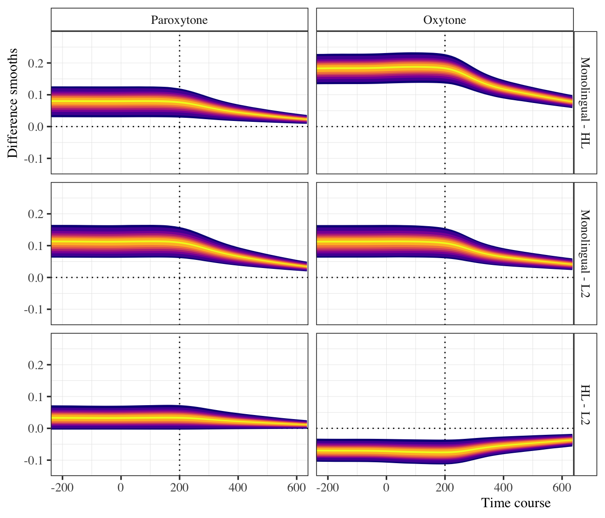
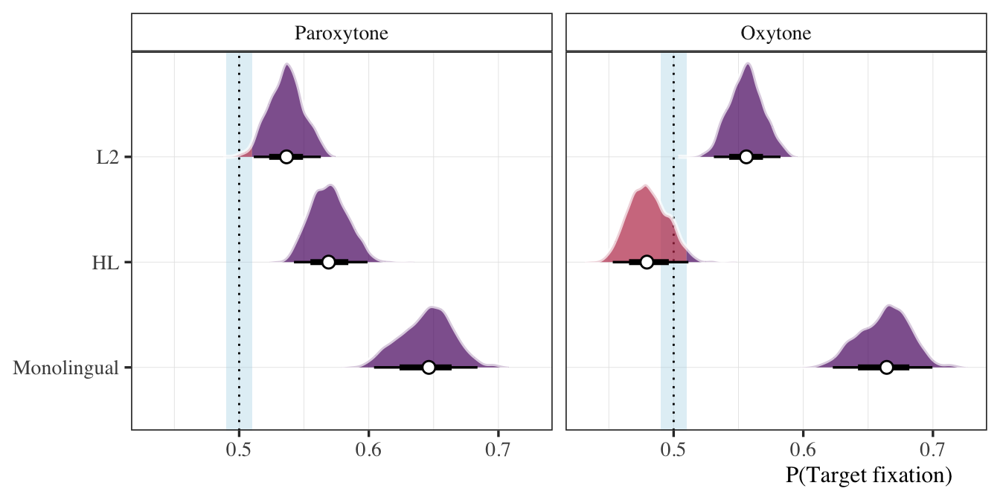
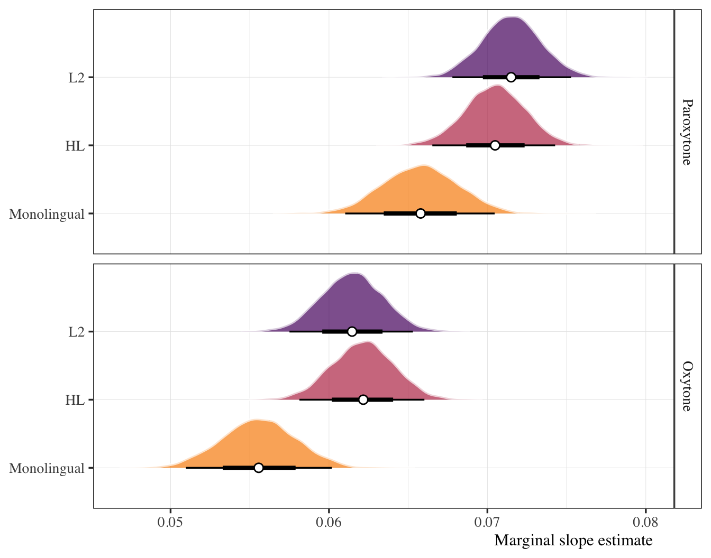
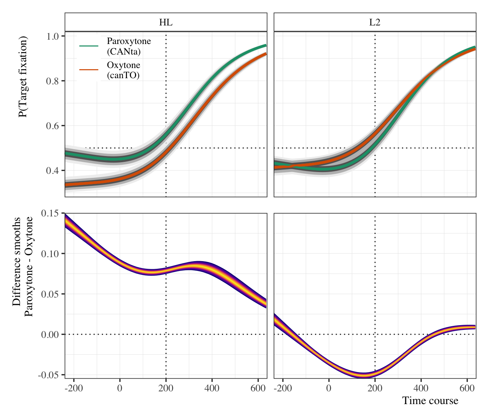
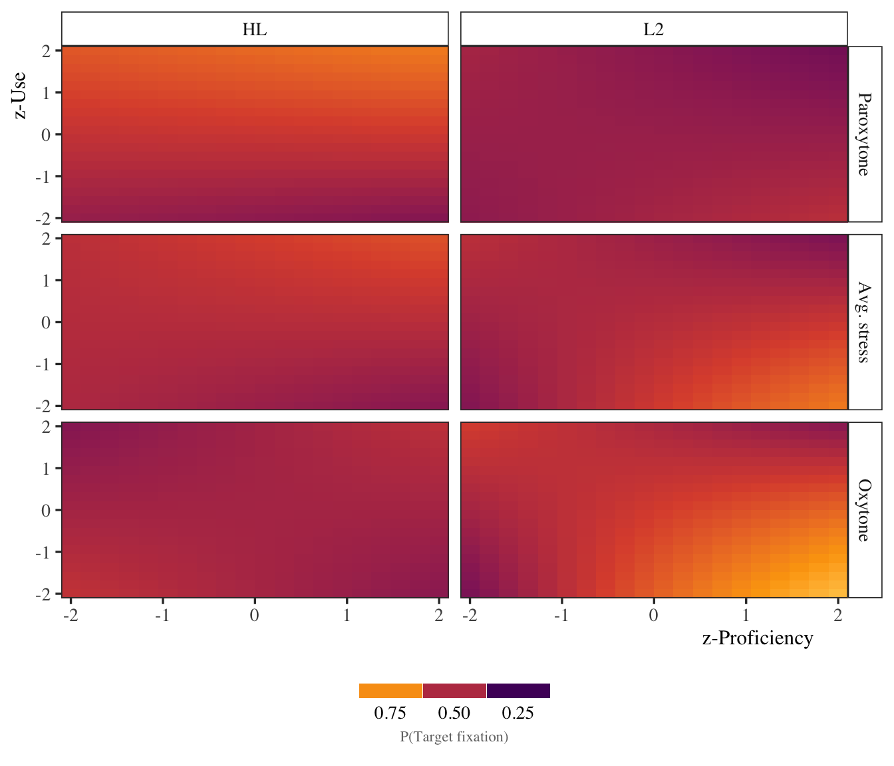

Morphological predictability - HS: 1.1
Summary
Abstract
Summary of analyses for morphosyntactic predictability project.
1 Take-aways
- The two bilingual groups are essentially equivalent regarding proficiency and use.
- Stress matters: Monolinguals always predict, bilinguals do to some degree, but depends on stress (holding use and proficiency constant)
- HL:
- Paroxytone (CANta) (most common): 👍
- Oxytone (canTA) (less common): 👎
- L2:
- Paroxytone (CANta) (most common): 👍
- Oxytone (canTA) (less common): 👍
- HL:
- Group differences
- Monolingual time course different from both bilingual groups (they predict sooner) regardless of stress
- HL and L2ers have essentially the same time course with paroxytonic stress, but L2 course is slightly delayed in comparison, the opposite is true for oxytonic stress, i.e., the HL time course is slightly delayed
- L2ers predict more than HL with (less common) oxytonic stress pattern (but still not a lot)
- Proficiency, use, and prediction
- HL
- High use individuals always predict in paroxytone condition.
- As use decreases, so does prediction
- Marginalizing over stress, prediction is pretty good across the board
- For oxytonic stress condition, only high use/high prof individuals predict
- Unexplained weirdness… in oxytone condition low prof/low use predicts higher (not sure about this)
- L2
- Generally use is less important
- Higher proficiency associated with higher prediction
- Lowest overall prediction in paroxytone condition
- HL
2 Key plots
2.1 Prof/use check
See Proficiency/use cleaup and EDA for full details. Eight of 130 participants removed to make use more comparable between groups.

2.2 Eye-tracking: Raw data

2.3 Eye-tracking: Group model (no prof/use)
2.3.1 Time course: GAMMs


2.3.2 Prediction at target offset

2.3.3 Estimated marginal slopes at target offset

2.4 Bilinguals only (prof/use)
2.4.1 Time course: GAMMs

2.4.2 Prediction at target offset: ZOIDBERG

3 Write-up
3.1 Method
3.1.1 Participants
We included data from 122 individuals for analysis. There were 30 monolingual participants, 42 heritage speakers, and 50 adult L2 learners.
The bilingual participants completed language use and proficiency assessments. We fit the use and proficiency data to separate Bayesian linear models to assess potential group differences. In both cases, the response variable, use or proficiency score, was a proportion. Thus, we used the beta distribution for the model likelihood with a logit linking function. The models included regularizing, weakly informative priors.1 We compare the posterior marginal mean difference between groups on both response variables. We established a region of practical equivalence (ROPE) of ±0.1. If, for a given measure, the full range of the 95% highest density interval of the difference estimate falls within the ROPE, we consider there to be compelling evidence that the groups are equivalent. The HL group had an average proficiency score of 0.70 [0.09] compared to the L2 groups’ score of 0.71 [0.14]. The marginal mean difference was 0.02 [−0.03, 0.07] and all of the HDI fell within the ROPE. The probability that the effect was positive was 0.77. Regarding language use, the HL group had an average score of 0.41 [0.15] compared to the L2 groups’ score of 0.38 [0.16]. The marginal mean difference was −0.02 [−0.09, 0.05] and, again, all of the HDI fell within the ROPE. The probability that the effect was negative was 0.72. Taken together, we are confident that the groups do not differ in any meaningful way with regard to use of/proficiency in Spanish. Table 1 provides descriptive statistics and Table 2 summarizes the models.
| Group | n | Proficiency | Use |
|---|---|---|---|
| HL | 42 | 0.70 [0.09] | 0.41 [0.15] |
| L2 | 50 | 0.71 [0.14] | 0.38 [0.16] |
| Metric | Contrast | Estimate | ROPE | PD |
|---|---|---|---|---|
| Proficiency | L2 - HL | 0.02 [−0.03, 0.07] | 1 | 0.77 |
| Use | L2 - HL | −0.02 [−0.09, 0.05] | 1 | 0.72 |
Footnotes
See Proficiency/use cleaup and EDA for full details.↩︎